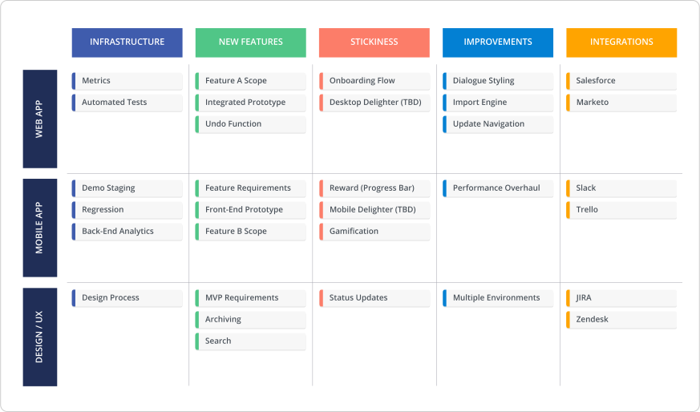
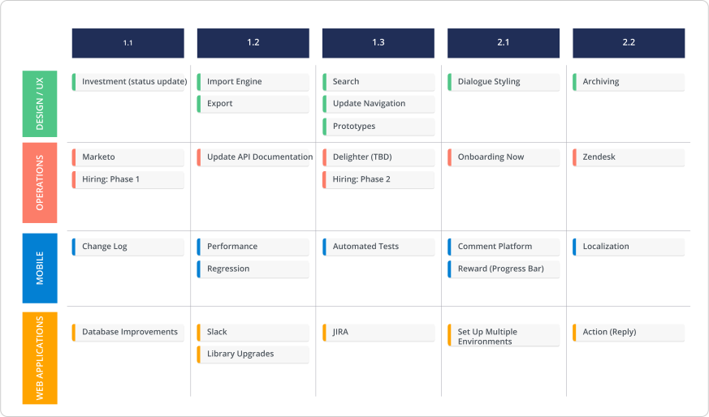
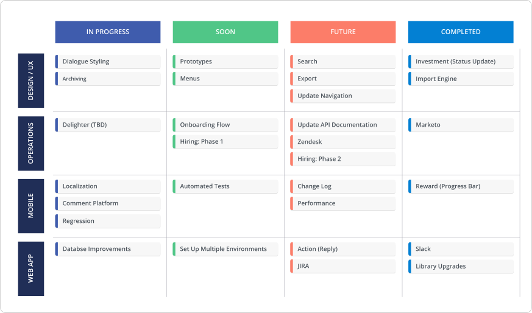
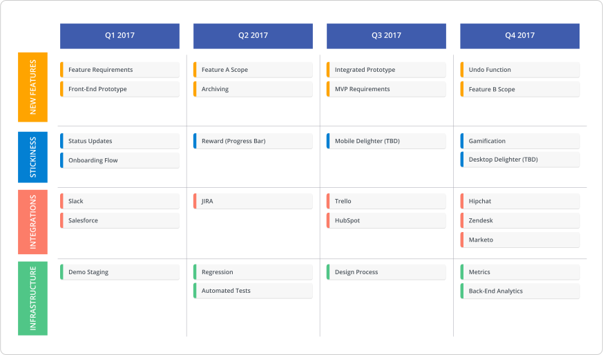

As a methodology, agile says: forget about planning on timelines — they’re unhelpful and hard to meet! On the other hand, roadmaps help you visualize plans, often on a timeline. So can you build an agile product roadmap? Or is this idea counterintuitive?
Let’s look at the facts. Agile indicates that teams are very flexible and willing to change their plans on a daily or weekly basis. That means project deadlines and dates are pretty insignificant. Yeah, you can add dates to your plan, but if you’re being truly agile (i.e. flexible), expect those dates to change.
Meanwhile, a roadmap usually asks: “Where the heck are we going to be in x amount of time?” Not everyone roadmaps along a timeline, but a roadmap almost always looks to the future beyond the day-to-day and week-to-week — even if not visually presented on a timeline.
So one concept (agile) sheds the constraints of time and another (roadmapping) often appears inherently time-based. Seems pretty counterintuitive. But we have to respectfully disagree. An agile product roadmap is a valuable tool and quite frankly, the concept of roadmapping fits rather nicely in agile environments. Here are some reasons why a roadmap does work for agile.
We created an actionable guide to creating any style of agile roadmap. Download it here.
Product roadmaps change as often as the agile world
Agile is an umbrella term. You’ve got your scrum shops, your extreme programming teams, your kanban processes. They all fall under “agile.” Each of these methodologies have their own nuances and ways of operating, but ultimately they all share a few major themes:
- You’re operating in short cycles
- Change comes quickly, so you always have to be prepared for it
- There is a ton of feedback because you’re operating in cycles that include checkpoints for evaluating your work
These themes are all rooted in the core idea that when functioning in agile, you must be flexible.
A product roadmap is a statement of intent. It’s not a literal roadmap. Your roadmap should not be an amalgamation of hard deadlines that must be met. It should be an incremental plan that openly embraces change. Plans can and will alter, and as a result so will your roadmap.
This flexibility of a product roadmap pairs extremely well with the nature of agile methodologies.
Roadmaps change frequently, allowing them to easily fit into agile settings — which also get reoriented often.
Roadmapping and agile both cut the bullshit
Agile is all about the hard truth — whether you like it or not. Agile provides realistic versions of how projects will play out. If a project is derailing, you’re told straight up it’s derailing. This transparency is part of why agile has picked up so much steam: it cuts the bullshit about what can or cannot be delivered.
Just as agile environments function on transparency, product roadmaps create transparency. You build a roadmap to clarify where the hell you’re headed. It’s a communication asset designed specifically to align various parties on the what, when and how of your project. And when that plan changes, you present a shiny, updated version.
A product roadmap’s function (showing transparency) directly ties into one of the major motivations of adopting an agile methodology (operating with transparency). They’re not in conflict; they fit nicely together.
You can’t escape long-term planning
One thing we’ve noticed when speaking to various PMs is that many of those who claim to operate in agile actually aren’t. Okay, they're operating in some form of agile, but waterfall elements are still mixed in — so it’s not purely agile. The reason: as your company grows, the harder it gets to ignore long-term planning.
Plenty of startups have successfully adopted an agile mentality that dismisses long-term timelines. But as these companies expand, stakeholders increase, user needs intensify and communication needs arise, PMs start juggling way more variables — which requires a deeper degree of planning.
Your dev and product teams may function in speedy cycles, but the rest of your growing company probably doesn’t. Other stakeholders don’t give a damn about your daily or weekly psychology. They want longer-term visions to plan hiring, budgeting and more. A roadmap addresses long-term goals and tackles planning pressures that inevitably creep up.
What does an agile product roadmap look like?
There are many different ways to structure an agile product roadmap. But having spoken to countless product managers, We’ve noticed a few trends. Here are a few quick agile product roadmap examples. (You can find and customize all these examples in our template library.)
Theme-Based Roadmap

Swimlane-style product roadmaps are especially effective for agile PMs. For the teams operating in pure agile (i.e. the ones that aren’t concerned with any dates), it’s common to organize a roadmap by theme. This means the headers might relate to different areas of product development.
Sprint Roadmap

If you work in a more structured agile environment, another option is to structure your product roadmap by cycle or sprint—and not link those sprints to specific dates.
Fuzzy Time Roadmap

Many agile teams also organize their product roadmaps according to “fuzzy time.” This means that rather than stating explicit dates, their product roadmap might include loose time buckets like In Progress, Future and Completed.
Agile-ish Roadmap

Whatever your agile style, take Roadmunk's agile roadmap template and make it your own.
And if you’re an agile-ish team that’s still incorporating waterfall elements, your product roadmap tends to have dates with a caveat. Your dates closer to the present tend to be more granular, whereas the further along you go the more abstract (i.e. fuzzy) the time headers become. It wouldn’t be agile if the dates were the be-all-end-all.
So we debunked the myth that product roadmaps don’t belong in agile environments, but why do you actually need one? Download our ebook for some reasons for the not-yet-convinced and real-world examples of these four powerful ways to visualize your agile product roadmap.